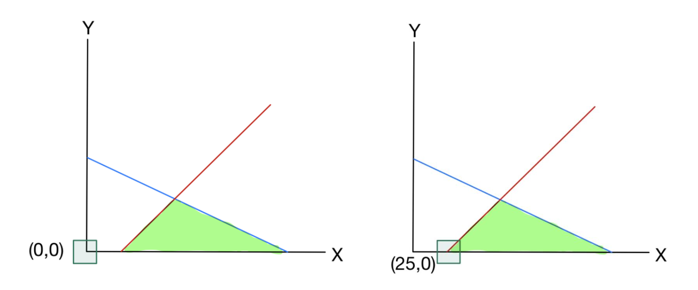
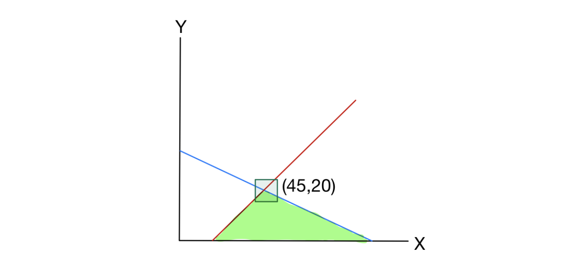
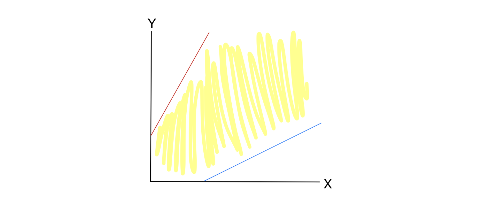

1. 도입: 초기 사전(Initial Dictionary)과 실행 가능성
선형 계획법(Linear Programming, LP) 문제를 풀기 위해 단체법(Simplex Method)을 사용할 때, 가장 먼저 직면하는 문제는 실행 가능한 초기 해(Initial Feasible Solution)를 찾는 것입니다.
지난 강의에서 다루었던 기본적인 예시를 다시 떠올려 보겠습니다. \[\max z = 5x + 4y\] \[\text{s.t.} \quad 2x + 3y \le 150\] \[\quad \quad \ \ 2x + y \le 70\] \[\quad \quad \ \ x, y \ge 0\]
이 문제를 표준형(Standard form)으로 변환하기 위해 여유 변수(Slack variables) \(s_1, s_2\)를 도입하면 다음과 같은 초기 사전(Initial Dictionary)을 얻을 수 있습니다 .
\[z = 5x + 4y\] \[s_1 = 150 - 2x - 3y\] \[s_2 = 70 - 2x - y\]
초기 상태에서 비기저 변수(Non-basic variables)인 \(x, y\)를 \(0\)으로 설정하면, 기저 변수(Basic variables)는 \((s_1, s_2) = (150, 70)\)이 됩니다. 우변의 상수항이 모두 음이 아닌 정수이므로, 이 초기 해는 모든 비음성(Non-negativity) 제약조건 \(s_1, s_2 \ge 0\)을 만족합니다. 이를 실행 가능한 사전(Feasible Dictionary)이라고 부릅니다.
1.1. 실행 불가능한 사전(Infeasible Dictionary)의 등장
하지만, 우변의 상수가 항상 0 이상이라는 보장은 없습니다. 다음과 같은 새로운 LP 문제를 고려해 봅시다 .
\[\max z = x + 2y\] \[\text{s.t.} \quad 2x + 3y \le 150\] \[\quad \quad -x + y \le -25\] \[\quad \quad \ \ x, y \ge 0\]
여유 변수를 추가하여 초기 사전을 구성하면 다음과 같습니다 .
\[z = x + 2y\] \[s_1 = 150 - 2x - 3y\] \[s_2 = -25 + x - y\]
여기서 \(x = y = 0\)으로 두면, \((s_1, s_2) = (150, -25)\)가 되어 \(s_2 \ge 0\) 제약조건을 위반하게 됩니다. 우리는 이를 실행 불가능한 사전(Infeasible Dictionary)이라 부르며, 이 상태에서는 표준 단체법 알고리즘을 시작조차 할 수 없습니다.
2. 2단계 단체법 (Two-Phase Simplex Algorithm)
초기 사전이 실행 불가능할 때 문제를 해결하기 위해 도입된 개념이 바로 2단계 단체법(Two-Phase Simplex Method)입니다 . 이 알고리즘은 논리적으로 두 개의 단계로 나뉩니다.
- Phase I (실행 가능한 사전 찾기): 주어진 LP의 실행 가능성을 테스트하고, 가능하다면 실행 가능한 사전을 도출합니다. 만약 불가능하다면, 해당 LP는 해가 없음(Infeasible)으로 결론 내립니다.
- Phase II (최적해 도출): Phase I에서 찾은 실행 가능한 사전을 초기 사전으로 삼아 일반적인 단체법을 수행합니다.
2.1. Phase I: 보조 LP 문제 (Auxiliary LP) 구성
원래 문제의 실행 가능성을 검증하기 위해 새로운 변수 \(t \ge 0\)를 도입한 보조 LP(Phase I LP)를 구성합니다 . 앞에서 본 예시의 경우 다음과 같이 변형됩니다 .
\[\min t\] \[\text{s.t.} \quad 2x + 3y - t \le 150\] \[\quad \quad -x + y - t \le -25\] \[\quad \quad \ \ x, y, t \ge 0\]
[핵심 정리(Theorem)] 새롭게 구성된 보조 선형 계획법이 실행 가능하고 그 최적값이 0과 같다면, 본래의 선형 계획법 역시 실행 가능합니다 (필요충분조건) . 목적 함수를 \(t\)의 최소화로 둔 이유는 최적해에서 \(t=0\)을 유도하여 원래 제약 조건을 복원하기 위함입니다.
이 보조 LP의 표준형 사전은 다음과 같습니다 (참고: \(\min t\)는 \(\max -t\)와 같습니다) .
\[z = -t\] \[s_1 = 150 - 2x - 3y + t\] \[s_2 = -25 + x - y + t\]
여전히 이 사전은 실행 불가능합니다. 이를 해결하기 위해 가장 음의 값을 가지는 기저 변수(\(s_2\))를 비기저 변수로 내리고, 새로운 변수 \(t\)를 기저 변수로 올리는 첫 번째 피벗(Pivot) 연산을 수행합니다 .
\[t = 25 - x + y + s_2\] 이 식을 목적 함수 \(z\)와 \(s_1\) 행에 대입하여 정리하면 다음과 같은 보조 LP의 첫 번째 실행 가능한 사전을 얻게 됩니다.
\[z = -25 + x - y - s_2\] \[s_1 = 175 - 3x - 2y + s_2\] \[t = 25 - x + y + s_2\]
이 상태에서 비기저 변수 \((x, y, s_2)\)를 모두 \(0\)으로 두면, 기저 변수는 \((s_1, t) = (175, 25)\)가 됩니다. 우변이 모두 양수이므로 보조 LP 자체는 실행 가능한 상태가 되었습니다.
[t를 0으로 만들기 위한 두 번째 피벗] 하지만 우리의 최종 목표는 \(t\)를 최소화하여 \(0\)으로 만드는 것입니다. 현재 목적 함수 \(z = -25 + x - y - s_2\)를 보면, 변수 \(x\)의 계수가 \(+1\)로 양수입니다. 즉, \(x\)의 값을 증가시키면 목적 함수를 개선(\(t\)를 감소)시킬 수 있습니다.
- 제약 조건을 위반하지 않는 선에서 \(x\)를 얼마나 증가시킬 수 있는지 알아보기 위해 비율 검사(Ratio Test)를 수행합니다 .
- \(s_1\) 제약: \(175 - 3x \ge 0 \implies x \le \frac{175}{3} \approx 58.3\)
- \(t\) 제약: \(25 - x \ge 0 \implies x \le 25\)
이 중 더 작은 값인 \(\min\{\frac{175}{3}, 25\} = 25\)까지만 \(x\)를 증가시킬 수 있습니다. \(x\)가 \(25\)까지 증가하는 순간, \(t\)는 \(0\)이 되어 비기저 변수로 내려가고, \(x\)가 새로운 기저 변수로 올라갑니다 .
\(t\) 행의 식을 \(x\)에 대해 정리하면 다음과 같습니다. \[x = 25 + y + s_2 - t\]
이제 최적값인 \(t=0\)을 달성했으므로 \(t\)를 식에서 제거하고 , 위 식을 \(s_1\) 행에 대입합니다 . \[s_1 = 175 - 3(25 + y + s_2) - 2y + s_2 = 100 - 5y - 2s_2\]
\[s_1 = 100 - 5y - 2s_2\] \[x = 25 + y + s_2\]
여기서 비기저 변수인 \((y, s_2)\)를 \(0\)으로 설정하면, 기저 변수는 \((x, s_1) = (25, 100)\)이 됩니다 . 이 과정을 통해 마침내 원래 문제의 첫 번째 실행 가능한 해인 \((x, y) = (25, 0)\)가 명확히 유도된 것입니다.

2.2. Phase II: 본래의 목적 함수 복원
Phase I을 통해 찾아낸 실행 가능한 사전에서 인위적으로 추가했던 변수 \(t\)를 \(0\)으로 설정하여 제거합니다 . 하지만 현재 사전에는 보조 LP의 목적 함수(\(z = -t\))가 남아있으므로, 이를 원래 문제의 목적 함수로 교체해야 합니다.
원래 목적 함수: \(z = x + 2y\) Phase I에서 얻은 사전에 따르면 \(x = 25 + s_2 + y\) 이므로, 이를 대입합니다.
\[z = (25 + s_2 + y) + 2y = 25 + s_2 + 3y\]
이제 Phase II를 위한 완벽한 실행 가능한 초기 사전이 완성되었습니다 .
\[z = 25 + 3y + s_2\] \[s_1 = 100 - 5y - 2s_2\] \[x = 25 + y + s_2\]
이 사전을 바탕으로 최적화 조건이 달성될 때까지 단체법을 계속 수행하면 최종 최적해에 도달합니다 .

3. 특수 케이스: Infeasibility와 Unboundedness의 인식
단체법 알고리즘 수행 중, 우리는 문제에 해가 아예 존재하지 않거나, 해가 무한히 커질 수 있다는 사실을 수학적으로 인지할 수 있습니다.
3.1. 실행 불가능성 (Infeasibility) 인식
앞서 언급했듯, 보조 LP(Phase I)의 목적은 변수 \(t\)를 \(0\)으로 만드는 것입니다. 만약 Phase I의 단체법이 더 이상 개선될 수 없는 최적 상태에 도달했음에도 불구하고, \(t\)의 값이 엄격하게 양수(\(t > 0\))라면, 이는 원래의 선형 계획법이 어떠한 방법으로도 제약 조건을 만족시킬 수 없는 상태, 즉 실행 불가능(Infeasible)함을 의미합니다.
3.2. 무한해 (Unboundedness) 인식
다음과 같은 LP를 살펴보겠습니다 . \[\max z = x + y\] \[\text{s.t.} \quad -2x + y \le 100\] \[\quad \quad \ \ x - 2y \le 100\] \[\quad \quad \ \ x, y \ge 0\]
표준형으로 변환 후 피벗을 한 번 수행하면 다음과 같은 사전을 얻게 됩니다 . \[z = 100 + 3y - s_2\] \[s_1 = 300 + 3y - 2s_2\] \[x = 100 + 2y - s_2\]
이 사전을 분석해보면, 목적 함수 행에서 \(y\)의 계수가 \(+3\)으로 양수입니다. 즉, \(y\)를 증가시키면 목적 함수 \(z\)의 값도 증가합니다. 일반적인 경우, \(y\)를 증가시키면 제약조건 때문에 어느 순간 기저 변수(\(s_1, x\))가 음수가 되어버려 증가를 멈춰야 합니다.
하지만 위 수식을 보면, \(y\)의 계수가 모든 기저 변수의 등식에서 양수(\(+3, +2\))입니다. 이는 \(y\)를 아무리 무한대로 증가시켜도 \(s_1\)과 \(x\)가 항상 양수로 유지된다는 것을 뜻합니다. 제약 조건의 위반 없이 목적 함수를 무한히 증가시킬 수 있으므로, 이 문제는 무한해(Unbounded)를 가집니다.

4. Phase I 일반화: 부등식 제약과 등식 제약
Phase I LP를 구성하는 방식을 제약 조건의 형태에 따라 수학적 벡터 및 행렬 꼴로 일반화해 보겠습니다.
4.1. 부등식 제약 조건 (\(Ax \le b\))의 경우
원래 문제의 제약 조건이 \(Ax \le b\), \(x \ge 0\) 형태로 주어졌다고 가정해 봅시다. 여기에 여유 변수(Slack variables) 벡터 \(s\)를 추가하면 다음과 같은 동치인 시스템을 얻습니다 .
\[Ax + s = \begin{bmatrix} a_1^\top x + s_1 \\ \vdots \\ a_m^\top x + s_m \end{bmatrix} = b\] \[x \ge 0, \quad s \ge 0\] (단, \(a_i^\top\)는 행렬 \(A\)의 \(i\)번째 행 벡터입니다.)
이 시스템은 자연스럽게 다음과 같은 초기 사전을 형성합니다 .
\[\begin{bmatrix} s_1 \\ \vdots \\ s_m \end{bmatrix} = \begin{bmatrix} b_1 \\ \vdots \\ b_m \end{bmatrix} + \begin{bmatrix} -a_1^\top x \\ \vdots \\ -a_m^\top x \end{bmatrix}\]
만약 \(b\)의 모든 원소가 \(0\) 이상이라면 이 초기 사전은 실행 가능합니다. 하지만 우변 벡터 \(b\)에 음수 원소가 존재하여 \(b_{\min} = \min_{i \in [m]} b_i < 0\) 인 상황이라면 이야기가 다릅니다. 이 경우, 모든 요소가 1인 벡터 \(\mathbf{1}\)과 새로운 변수 \(t \ge 0\)를 도입하여 다음 시스템을 고려합니다 .
\[Ax - t\mathbf{1} \le b, \quad x \ge 0, \quad t \ge 0\]
이 새로운 시스템은 원래 시스템과 달리 항상 실행 가능합니다. 구체적으로 \((x, t) = (0, -b_{\min})\)을 대입하면 제약 조건을 만족시킵니다 . 이를 바탕으로 구성한 Phase I LP는 다음과 같습니다 .
\[\min t\] \[\text{s.t.} \quad Ax - t\mathbf{1} \le b\] \[\quad \quad \ \ x \ge 0, \ t \ge 0\]
원래의 \(Ax \le b, x \ge 0\) 시스템이 실행 가능할 필요충분조건은 이 Phase I LP의 최적값이 \(0\)이 되는 것입니다. 왜냐하면 최적값이 \(0\)이라는 것은 \((x, t) = (\bar{x}, 0)\) 인 해가 존재하여 \(A\bar{x} - 0\mathbf{1} = A\bar{x} \le b\) 및 \(\bar{x} \ge 0\)을 만족한다는 뜻이기 때문입니다.
이 Phase I LP를 풀기 위해 표준형으로 변환하면 다음과 같습니다 . \[Ax - t\mathbf{1} + s = \begin{bmatrix} a_1^\top x - t + s_1 \\ \vdots \\ a_m^\top x - t + s_m \end{bmatrix} = \begin{bmatrix} b_1 \\ \vdots \\ b_m \end{bmatrix}\] \[x \ge 0, \ t \ge 0, \ s \ge 0\]
이제 초기 사전을 유도해 보겠습니다. 설명을 단순화하기 위해 \(b_1\)이 \(b\)의 원소 중 가장 작다고 가정하겠습니다 (\(b_1 = b_{\min} < 0\)) . 첫 번째 행의 식을 변환의 기준으로 삼아 다른 모든 행에서 첫 번째 행을 빼줍니다. \[\begin{bmatrix} a_1^\top x - t + s_1 \\ (a_2 - a_1)^\top x + s_2 - s_1 \\ \vdots \\ (a_m - a_1)^\top x + s_m - s_1 \end{bmatrix} = \begin{bmatrix} b_1 \\ b_2 - b_1 \\ \vdots \\ b_m - b_1 \end{bmatrix}\]
위 식에서 첫 번째 행을 \(t\)에 대해 정리하고, 나머지 행을 \(s_i\)에 대해 정리하여 변수들을 적절히 이항하면 다음과 같은 보조 LP의 첫 번째 실행 가능한 사전을 얻게 됩니다 .
\[\begin{bmatrix} t \\ s_2 \\ \vdots \\ s_m \end{bmatrix} = \begin{bmatrix} -b_1 \\ b_2 - b_1 \\ \vdots \\ b_m - b_1 \end{bmatrix} + \begin{bmatrix} a_1^\top x + s_1 \\ -(a_2 - a_1)^\top x + s_1 \\ \vdots \\ -(a_m - a_1)^\top x + s_1 \end{bmatrix}\]
이 사전은 완벽하게 실행 가능합니다. 왜냐하면 \(i \in [m]\)에 대하여 우변의 상수항 \(b_i - b_1 = b_i - \min\{b_j : j \in [m]\} \ge 0\) 이고, \(-b_1\) 역시 양수이기 때문입니다 . 이제 단체법 알고리즘을 진행할 준비가 끝났습니다.
4.2. 등식 제약 조건 (\(Ax = b\))의 경우
만약 제약 조건이 \(Ax = b\), \(x \ge 0\) 형태로 주어졌다고 해봅시다 . 이 경우의 Phase I LP는 인위적 변수 \(s\)(벡터)와 \(t\)(스칼라)를 도입하여 다음과 같이 구성됩니다 .
\[\min t + \sum_{i=1}^m s_i\] \[\text{s.t.} \quad Ax - t\mathbf{1} + s = b\] \[\quad \quad \ \ x \ge 0, \ s \ge 0, \ t \ge 0\]
여기서 만약 \(b\)의 모든 원소가 \(0\) 이상이라면, \((x, t, s) = (0, 0, b)\)가 실행 가능한 해가 됩니다 . 이때의 실행 가능한 사전은 다음과 같습니다 . \[\begin{bmatrix} s_1 \\ \vdots \\ s_m \end{bmatrix} = \begin{bmatrix} b_1 \\ \vdots \\ b_m \end{bmatrix} + \begin{bmatrix} -a_1^\top x + t \\ \vdots \\ -a_m^\top x + t \end{bmatrix}\]
하지만 \(b\)에 음수인 원소가 존재할 때가 문제입니다. 부등식 때와 마찬가지로 편의상 \(b_1\)이 가장 작은 음수 값이라고 가정해 보겠습니다. 이 경우 \(s_1\) 대신 \(t\)를 기저 변수로 사용하여 \(Ax - t\mathbf{1} + s = b\) 연립방정식을 정리합니다 .
놀랍게도 등식 제약조건에 대해서도 부등식 제약조건의 보조 LP 초기 사전과 정확히 동일한 형태의 실행 가능한 사전이 도출됩니다 .
\[\begin{bmatrix} t \\ s_2 \\ \vdots \\ s_m \end{bmatrix} = \begin{bmatrix} -b_1 \\ b_2 - b_1 \\ \vdots \\ b_m - b_1 \end{bmatrix} + \begin{bmatrix} a_1^\top x + s_1 \\ -(a_2 - a_1)^\top x + s_1 \\ \vdots \\ -(a_m - a_1)^\top x + s_1 \end{bmatrix}\]
이처럼, 행렬과 벡터의 형태를 빌려 부등식/등식의 모든 경우를 포괄하는 일관적인 보조 LP(Phase I LP) 초기화 템플릿을 완성할 수 있습니다 .
5. 행렬을 이용한 Phase II 기술적 세부사항 (Technical Details)
지금까지 연립방정식 형태로 다루었던 단체법의 사전을 선형대수학의 행렬 형태로 정립해 보겠습니다 . 이 부분은 추후 최적화 이론을 깊이 이해하는 데 핵심적인 뼈대가 됩니다. Phase I을 거쳐 실행 가능한 사전을 확보했다고 가정하고 시작하겠습니다.
주어진 LP 표준형은 다음과 같습니다 . \[\max z = c^\top x\] \[\text{s.t.} \quad Ax = b\] \[\quad \quad \ \ x \ge 0\]
먼저 변수 벡터 \(x\)를 기저 변수(Basic variables) \(x_B\)와 비기저 변수(Non-basic variables) \(x_N\)으로 분할(Partition)하여 다음과 같이 표현합니다 . \[x = \begin{bmatrix} x_B \\ x_N \end{bmatrix}\]
이에 대응되도록 목적 함수의 비용 벡터 \(c\)와 제약 조건 행렬 \(A\) 역시 기저 및 비기저 부분으로 분할합니다 . \[c = \begin{bmatrix} c_B \\ c_N \end{bmatrix}, \quad A = \begin{bmatrix} B & N \end{bmatrix}\]
[가정 (Assumption)] 기저 변수 \(x_B\)를 설정하기 위해서는, 이에 대응하는 제약 행렬의 열들로 구성된 정방행렬 \(B\)가 정칙 행렬(Nonsingular)이어야 합니다. 즉, 역행렬 \(B^{-1}\)이 존재해야 합니다 .
5.1. 제약 조건의 행렬 연산과 사전(Dictionary) 유도
표준형의 제약 조건 \(Ax = b\)를 분할된 행렬을 사용해 전개하면 다음과 같습니다. \[Bx_B + Nx_N = b\]
기저 변수 \(x_B\)에 대한 실행 가능한 사전을 얻기 위해서는 적절한 행 연산(Row operations)을 적용해야 합니다. 행렬식에서 이 과정은 양변의 왼쪽에 \(B^{-1}\)을 곱하는 것과 정확히 동치입니다. \[x_B = B^{-1}b - B^{-1}Nx_N\]
[가정 (Assumption)] \(x_B\)가 단체법을 위한 정상적인 실행 가능한 사전을 구성하려면, 상수항 벡터인 \(B^{-1}b\)의 모든 원소가 음이 아니어야(nonnegative) 합니다 .
5.2. 목적 함수 유도와 축소 비용 (Reduced Costs)
다음으로 목적 함수 \(z\) 행에서 기저 변수 \(x_B\)를 제거해야 합니다. 비용 벡터와 변수 벡터의 내적을 분리하면 다음과 같습니다. \[z = c_B^\top x_B + c_N^\top x_N\]
앞서 구한 \(x_B\)의 수식을 활용하여 \(c_B^\top x_B\)를 비기저 변수 \(x_N\)에 대한 식으로 변환합니다. \[c_B^\top x_B = c_B^\top (B^{-1}b - B^{-1}Nx_N)\]
이를 다시 원래의 목적 함수 \(z\) 식에 대입하여 \(x_B\)를 완전히 소거합니다 . \[z = c_B^\top B^{-1}b - c_B^\top B^{-1}Nx_N + c_N^\top x_N\]
이를 \(x_N\)에 대해 묶어 전치(Transpose) 성질을 활용해 정리하면, 다음과 같은 최종 사전을 얻을 수 있습니다 . \[z = c_B^\top B^{-1}b + \left(c_N - N^\top (B^{-1})^\top c_B\right)^\top x_N\] \[x_B = B^{-1}b - B^{-1}Nx_N\]
5.3. 최적성 검증 (Optimality Check)
위에서 도출한 최종 행렬 기반 사전을 통해 다음의 중요한 결론들을 도출할 수 있습니다.
- 현재 솔루션: 비기저 변수 \(x_N = 0\)이므로, 현재 해는 \((x_B, x_N) = (B^{-1}b, 0)\) 입니다 .
- 현재 목적함수 값: \(z = c_B^\top B^{-1}b\) 가 됩니다 .
- 여기서 행렬 \(B\) (또는 \(x_B\)에 대응하는 열들)를 기저(Basis)라고 부릅니다.
- 목적 함수 식에서 비기저 변수 \(x_N\)의 계수인 \(c_N - N^\top (B^{-1})^\top c_B\) 를 축소 비용(Reduced Costs)이라고 부릅니다.
[최적성 조건 (Optimality Condition)] 현재 다루고 있는 최대화(Maximization) 문제에서, 계산된 축소 비용의 모든 원소가 0 이하(non-positive)라면, 현재의 사전은 최적(Optimal)이라고 판단합니다 . 더 이상 비기저 변수를 기저로 진입시켜 목적 함수를 증가시킬 수 없기 때문입니다.